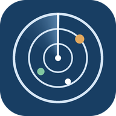

Akademski radar
Otvaram Akademski radar…
Ovo je pokretač za tvoj Akademski radar. Instaliraj ga i dobićeš ikonicu koja otvara aplikaciju.
Telefon (Android, Chrome): meni ⋮ gore desno → Instaliraj aplikaciju (ili Add to Home screen → Install).
Kompjuter (Chrome ili Edge): ikonica za instalaciju na desnom kraju adresne trake, ili meni → Apps → Install.
Otvori Akademski radar
Kompjuter (Chrome ili Edge): ikonica za instalaciju na desnom kraju adresne trake, ili meni → Apps → Install.